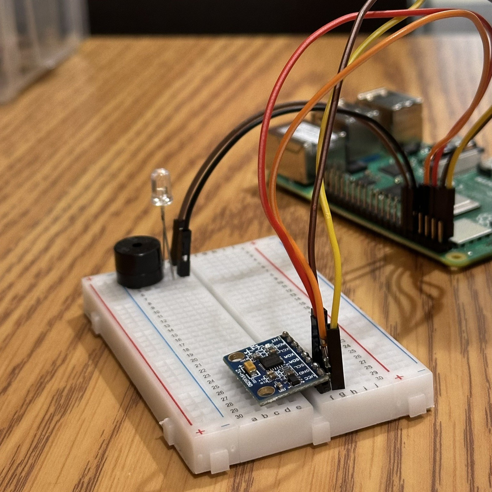
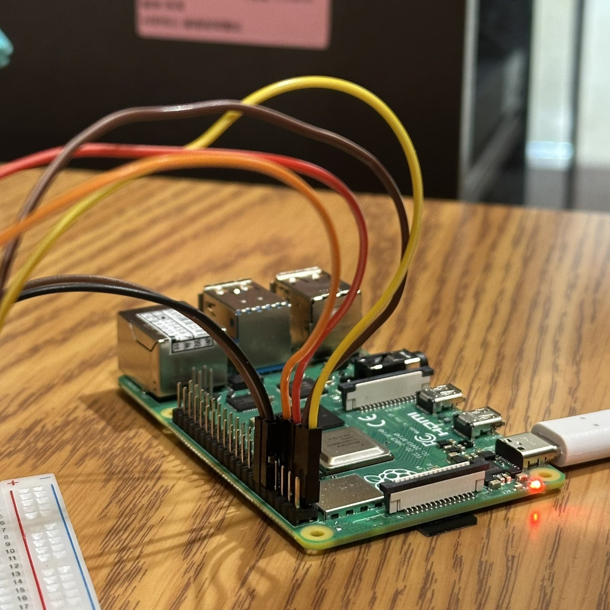
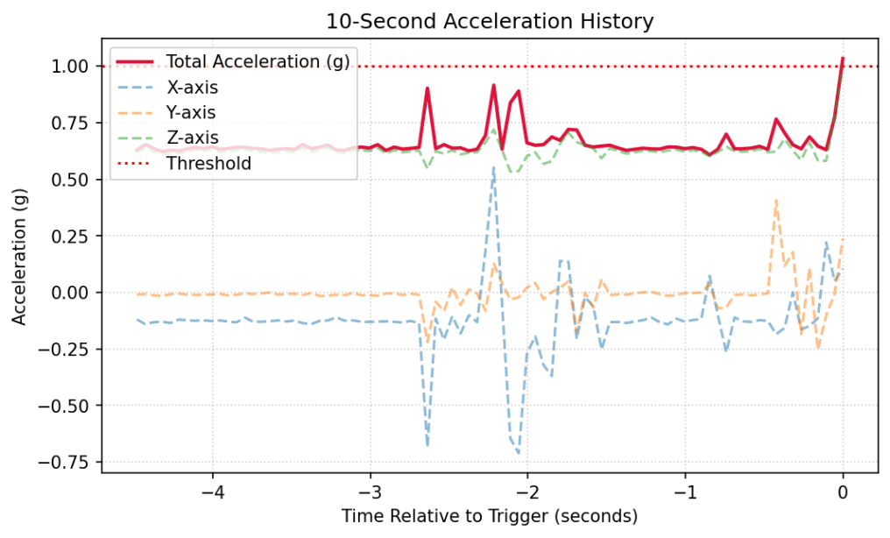
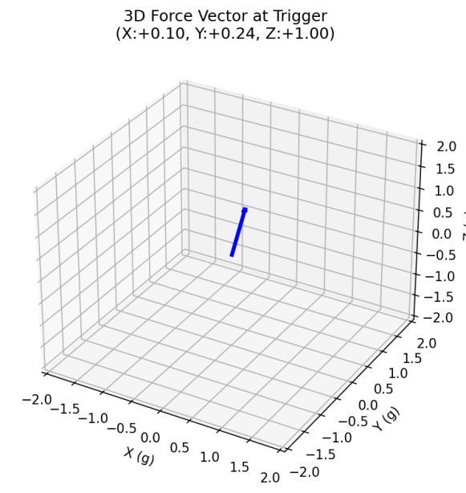

Seismology — Final Report & Semester Review
涵蓋整學期十項課程作業回顧，以及以 Raspberry Pi 搭配 MPU-6050 加速度計 自製地震儀的完整實作成果，包含三軸數據分析與即時警報系統展示。
Semester Review
從地震學基礎章節、震源機制繪製、實驗操作，到演講心得與校外參訪， 完整記錄 2025–2026 學年地震學課程的學習歷程。
Final Project
以低成本單板電腦（Raspberry Pi）結合 MPU-6050 三軸加速度計， 打造能即時偵測地面振動、分析三軸加速度並在超過閾值時觸發聲光警報的地震監測裝置。 詳細步驟說明請參閱完整實作報告。
依照老師教學（UART 接線 → 驅動排錯 → Wi-Fi 設定 → MPU6050 實作）， 完整建置樹莓派地震監測系統，並開發即時警報與數據視覺化功能。




X:+0.10g Y:+0.24g Z:+1.00g這學期地震學課程帶給我豐富且多元的學習體驗：從扎實的理論基礎（地震波、震源機制、地球內部結構）， 到實驗操作、校外參訪、演講激勵，再到期末親手打造地震儀—— 每一項作業都讓我對「地震」有了更深刻且具體的認識。
感謝老師這學期精彩的課程安排與指導。 未來希望能將所學應用於更進階的地震監測與防災研究。